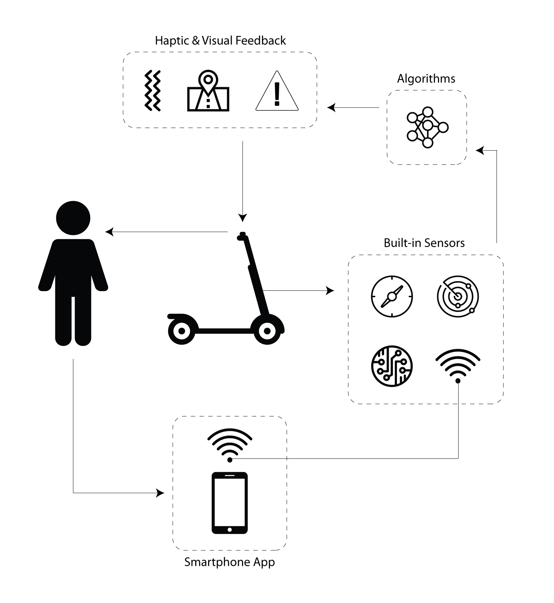
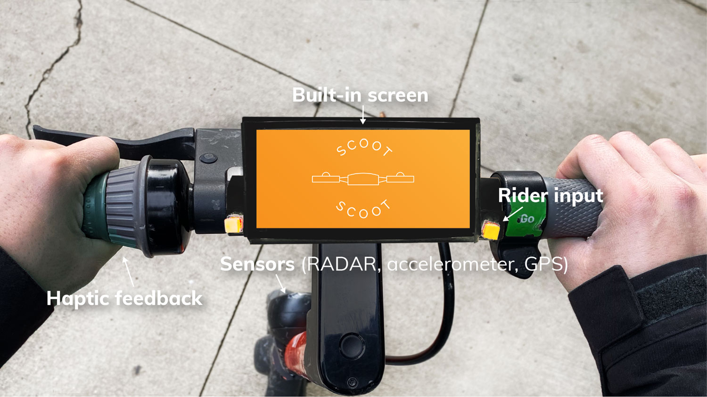

Scoot Scoot
Ride as you are, arrive as you are.
An integrated electric scooter (e-scooter) safety system that uses sensors and crowdsourcing to alert riders to hazards using real-time haptic feedback and a built-in digital screen. By applying existing tools and models that are already widely used in electric scooter systems, Scoot Scoot can easily integrate into an already established rental system and provide much-needed safety options for riders.
Our motivation for developing this product comes from the popularity of e-scooters in busy urban areas and the statistics showing how many injuries result from this growing market. The CDC found that, in late 2018, 3 people were injured on e-scooters every day in Austin, Texas alone and 15% of those injuries resulted in a traumatic brain injury. (CDC) The same study also found that 50% of of those riders cite “surface conditions” such as potholes or pavement irregularities as the cause of their accident. In order to combat this trend, we focused our research on uncovering a way to improve the safety of e-scooters by increasing users’ awareness of the surrounding environment.
Research
To better understand our target demographic we conducted a formative study along with other research. Each method helped uncover more insights and details that informed what form our final product would take and what features to prioritize.
Field Observations
Observed scooter riders around Ann Arbor, MI at various locations over a 3 day-period.
Survey
Surveyed 70 e-scooter riders using Qualtrics about their experiences. Questions included how often they ride, why they ride, and if they own or rent a scooter.
User Interviews
Interviewed 3 infrequent e-scooter riders that responded to our initial survey. Questions focused on details about recent e-scooter rides, what types of hazards they encountered, and feedback on early product concepts.
Diary Study
Asked 3 frequent riders to submit a brief survey after each e-scooter ride over a 3-day period. Survey asked riders to document what hazards they encountered and how they felt about their ride.
User Enactments
In order to understand if our initial concept would meet user needs, we designed a series of 5 scenarios using a low-fidelity paper prototype of our solution and a manual kick-scooter. We observed 4 participants as they encountered various hazards and system alerts and were asked after each scenario their thoughts and preferences.
Key insights
It’s difficult to use a phone while driving.
One user enactment participant said “We all know that using screens while riding is dangerous but we all do it anyway”. This informed our decision to leverage haptic feedback to communicate with users to reduce the reliance on visual communication.
Most users rent scooters and do not want to buy or carry scooter accessories, even if they improve safety.
We decided to use embedded sensors within the scooter to inform riders about hazards instead of a wearable or extra peripheral that would need to be carried around by the user. Additionally, this also informed our decision to use an built-in screen option instead of the user’s phone as the visual communication device.
Drivers don’t feel safe taking their hands off the handlebars.
In order for users to be able to communicate with the device without moving their hands from the handlebars, we affixed two buttons directly on the handlebars and simplified the questions asked by the device to a confirm/deny format.
Rented scooters don’t alert users about no-ride zones, low batteries, or other hazards.
In addition to adding haptic alerts and an embedded screen to communicate with riders, we also incorporated crowdsourced and local hazard detection that will alert riders of hazards far enough in advance to change their route or stop safely.
Users were most concerned about the hazards they could not see.
Crowdsourced data is helpful for larger or persistent hazards however, for hazards that have not yet been logged or may be harder to perceive (such as pavement irregularities), a local sensor will alert the user in advance so they can slow down or avoid the hazard.
Users want control over the alerts they receive and how to respond.
Our user enactment showed consistently that users want to be informed about hazards but also want to be able to decide what they are warned about and how to respond. In addition to the button interface described previously, we incorporated control options in the scooter rental app itself to allow a user to decide what kind of feedback they receive on that particular ride.
Final system concept
Our final system concept addresses e-scooter safety concerns by integrating hazard detection and communication features.
Sensors
Built-in accelerometer sensors on the scooter would record vibrations, which would be used to infer road hazards like rough terrain. Accelerometers would also sense changes in speed in order to predict traffic patterns such as busy walkways or congested roadways. Radar sensors would be used to detect oncoming vehicles such as cars, bikes, or other scooters.
Crowdsourcing
Aggregated data from the accelerometers in our scooters would be used to alert drivers about real-time road conditions and traffic. An algorithm would analyze the data to determine the likelihood of a real hazard or traffic back-up or a one-off event.
Haptic Feedback
Our system includes two levels of haptic alerts built directly into the e-scooter handlebars. Any time a safety alert is triggered, such as a potential collision or upcoming terrain issue, the user would feel repeated short vibrations in the handlebars until the hazard has passed. With this feedback the driver would know to increase awareness of their surroundings without needing to take their eyes off the road. One longer vibration would be used for non-safety alerts such as traffic and low battery warnings. This way drivers would always be notified about problems during their ride, and still easily distinguish between critical and non-critical alerts. Since it would be fully integrated into the handlebars, the alert-related vibration that drivers feel would be clearly different than any rattling caused by road conditions.
Embedded Screen
Our concept includes an embedded screen that serves to show navigation and directions to the user based on their destination, and supplement haptic notification with visual alerts and feedback.
Interaction with built-in screen
Since it would not be safe for a user to take their hands off the handlebars and touch the built-in screen, we included buttons on the handlebars drivers can use for screen interactions such as dismissing alerts.
Sources: Car and Driver, Healthline, and CDC
Prototype Key Features
Haptic feedback
Although we weren’t able to integrate haptic feedback into the actual handlebars of the scooter, we still wanted our demo to show how the alerts worked. To do this we programmed a vibration motor using Arduino Uno and a bluetooth HM-10 module. We found code online to control an LED light, which we adapted for the motors. We also downloaded a BLE terminal app which connects to the bluetooth module and communicates with the motor. The code designated the letters “F” and “N” to mean on and off. In the BLE terminal app we assigned those characters to buttons so we’d be able to quickly enter them during the demo. In order for the audience to hear the vibration we attached a small bell to the motor.
Built-in screen for scooter
To simulate a built-in screen for our scooter we constructed a container out of foam core, hot glue, and paint. This held a group member’s smart phone as well as the Arduino. The container used velcro strips so that we could remove it from the handlebars (for ease of transport), and remove the smartphone and Arduino inside it.
Screen simulations
We used a Figma prototype to simulate the navigation and alerts that would display on a real built-in screen. This prototype was controlled remotely by laptop using screen mirroring. These screens showed what real crowdsourced data could produce if the accelerometer sensors and algorithms were functional.
User input
To simulate user input, we fastened two buttons on the left and the right of the screen. Although the buttons were not functional for our prototype, they are meant to give the rider the experience of control over the alerts that come through. If a rider chooses to ignore an alert, the screen instructs them to press the button on the right. If a rider would like the system to take control and change the course of their ride, the screen instructs them to press the button on the left. This interaction is meant to be intuitive and not take a large amount of attention from the rider.
Ideal System
Our ideal system components connect and communicate with each other seamlessly. The scooter rental app connects to a built-in sensor on the scooter using a cellular connection. Rental scooters already include accelerometers and GPS so we would make use of those as well as a new RADAR sensor. Data from these sensors would be sent to a database and processed by a proprietary algorithm in order to predict traffic patterns, road hazards, and potential collisions. Scoot Scoot would then calculate the safest, quickest route for the rider and display this as navigation on the built-in digital screen. It would also use this system to identify hazards from crowdsourced data and alert riders in advance using haptic feedback and visual alerts. Riders would be able to use the buttons embedded in the handlebars to interact with the screen such as dismissing a low battery alert or accepting a new route around traffic. We will maintain user privacy by not storing any identifying information with the user account (such as anonymizing logged hazard data that will be used to calculate crowdsourced hazards) and limiting the saved data to only what is necessary (only storing ride duration, not route, GPS position, or any other identifiable data).
Reflection
Design Limitations
IntegrationOne aspect of the Scoot Scoot design that we were not able to implement and test was the integration of the technology into existing e-scooters. For all of our user testing, we used a traditional kick-scooter with Scoot Scoot attached. We were able to simulate a ride with this set up to the best of our ability, but we were lacking some of the elements and size dimensions that are unique to e-scooters. It is possible that the screen may be difficult to read when riding at higher speeds or that the button placement forces riders to let go of the acceleration lever.
FeedbackAnother limitation of using a kick-scooter for testing was the lack of a true environment to test in. If someone were using Scoot Scoot technology, the assumption is that they would be outdoors, riding on rough terrain, and surrounded by pedestrian and motor traffic. These environmental factors could potentially affect our feedback design. For instance, someone may not be able to distinguish between a handlebar vibration and rough terrain beneath them. Another potential scenario is the sensory overload that could happen when surrounded by the environment and the technology. Safety is the mission of Scoot Scoot, so we would need to be certain that a final design would consider the limitations of indoor testing.
Next Steps
Higher fidelity prototypingTo ensure that the interactions on Scoot Scoot are intuitive for users and successful on an e-scooter, we would need to work on building a higher fidelity prototype of the design. This prototype would need to include real sensors, working buttons and interactions, the crowdsourcing and alert system algorithm, and an onboarding sequence for new riders.
Test in real environmentMost of the limitations of our design stem from the lack of ability to test in a true environment. After creating a high-fidelity prototype of the technology, we would need to take that outdoors and have people test a ride with Scoot Scoot from start to finish. The data from the tests could be benchmarked against the traditional e-scooter experience. Since the goal of Scoot Scoot is to make e-scooters safer, we could survey users to get immediate feedback and look at data over time to see the larger impact of our design.